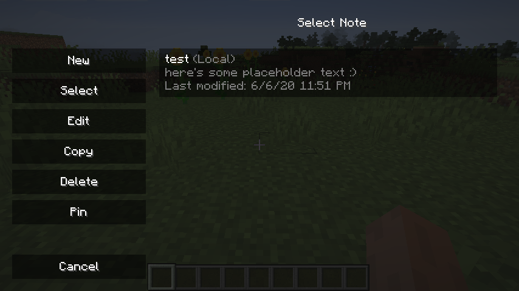
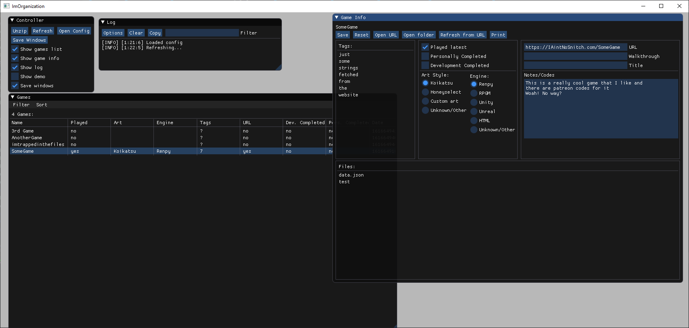
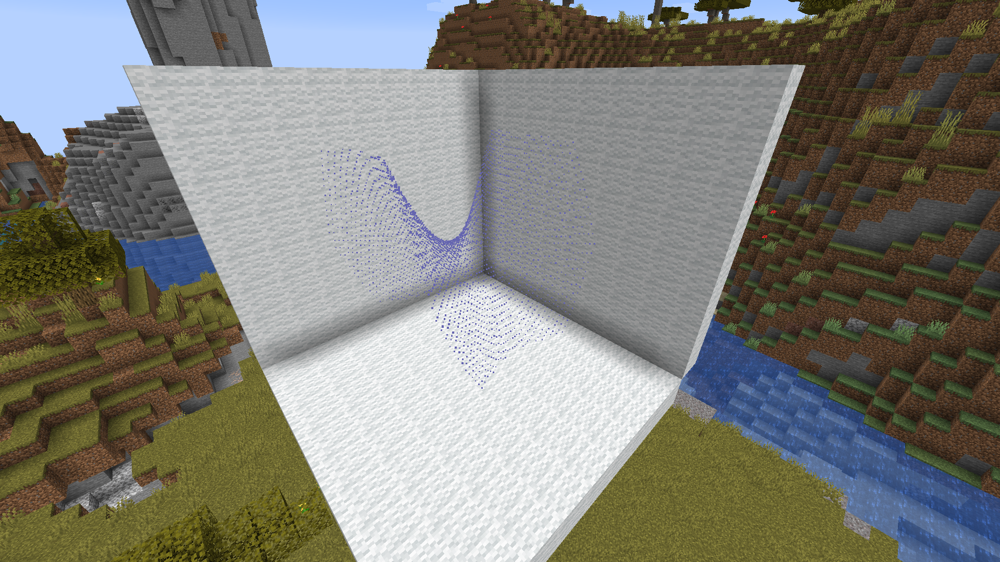
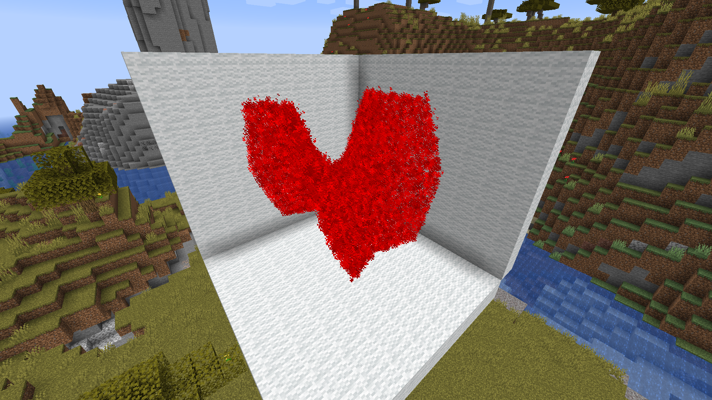
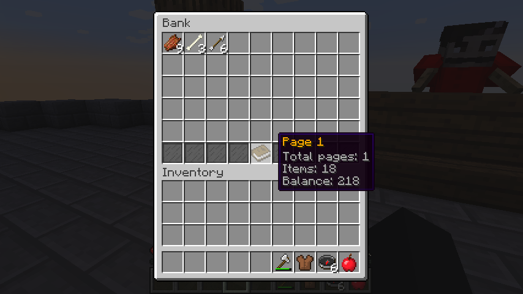
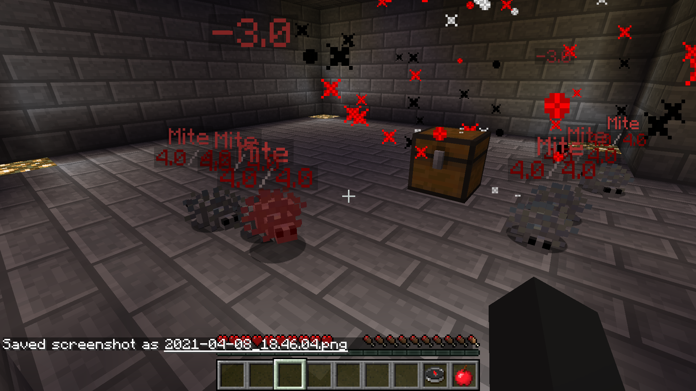
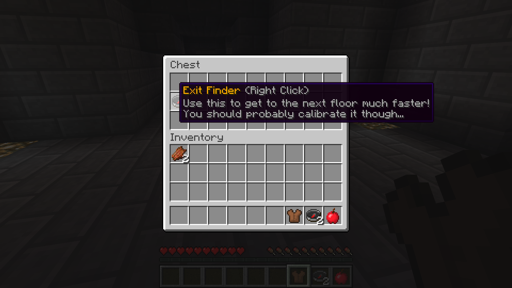
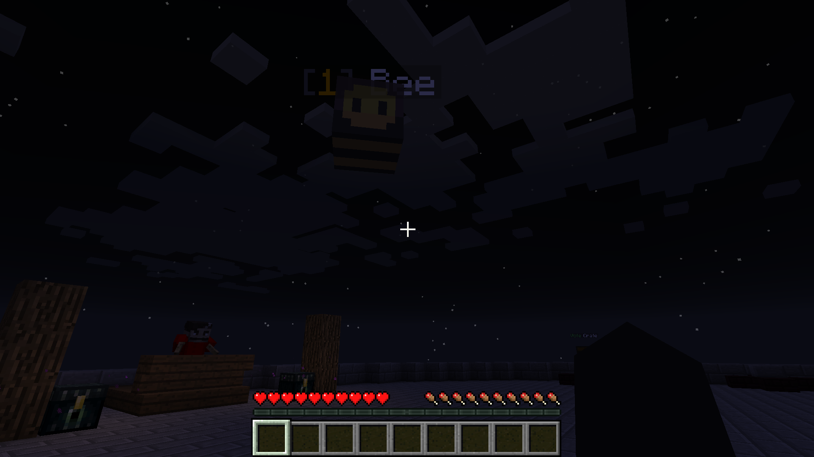
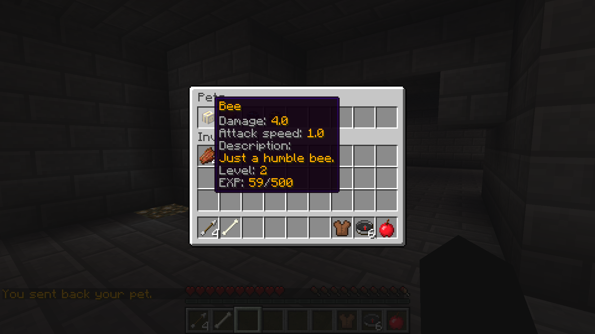
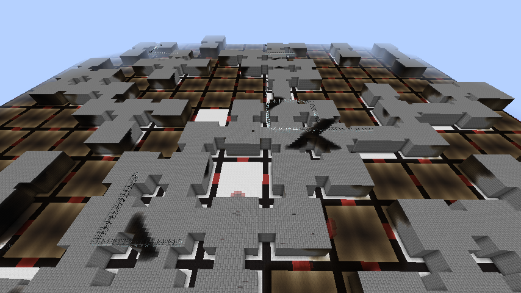

Notes
June, 2020 - Present
(Curseforge)
Notes Fabric
is a Fabric mod made for Minecraft 1.15.2-1.16.5, which
allows you to take notes in-game (or externally) and
save them per-world, per-server, or globally. It's a
port of the forge mod of the same name,
Notes, and has racked up almost 700k downloads as of
writing.

Indie Game Library
I play a lot of different games. 267 on Steam, 161 on
Epic Games, and 198 without an organizer. Of course,
some of them I haven't gotten around to, and some have
hardly any play time. But luckily, on Steam and Epic
Games, I can keep track of my whole library easily. This
isn't true for those indie games whose playerbase
consists of a handful of players, though. These games
have to either be on itch.io, or they are just hosted
somewhere on the internet. That's where my little
program comes in, sorting their downloads and
information. I created this with one website in mind
that I mainly go to, but there's masked download links
and all that jazz, so here we are.
This project has gone through many iterations, but the
main two versions are TornadoFX (JavaFX with Kotlin
extensions), Dear ImGui (C++ -> Kotlin library). The
original point was to organize my different games into
an easily navigatable file structure, but then I was
having fun and ended up with UI. The difficult part was
to also include the different versions of games into the
same folders, and to include the most common types of
compression. In order to figure out what zip files were
of the same game, I looked for the executable of the
game and named it based off that (provided there wasn't
a generic name).

The TornadoFX rendition

The Dear ImGui Rendition
Minecraft Graphing
March 22nd, 2021
(Github)
Although it was a short project, this one was one of my
latest favorites cause it was a lot of fun to play
around with. This plugin allows you to create 3D graphs
in-game using particles. The idea came after my Calculus
III class one day, since I realized I could make almost
any shape if I just chained them together. At present,
the plugin only supports one graph at a time, but it'd
be pretty trivial to add in more.

Here's a saddle function (x^2 - y^2 - z = 0) made
from the 'suspended' particles.

The same function with redstone particles instead.
Dungeon Crawler
Febuary, 2020 - March, 2020
(Github)
DungeonCrawler was inspired by both Minecraft Dungeons
and Skyblock Dungeons. At the time of development,
neither had been released, so my friend and I took a
swing at making our own dungeon game mode. By the time
we got around to making the main features, it was mainly
me working on it, but he occasionally added a little
feature here or there.
The dungeon prefabs are based off of chunk size builds
located off on the side of the map, and there can be as
many different ones as you'd like.

The bank, an upgradable storage.

Mites, a swarm type mob.

Exit finder, a tool to get through the dungeon
faster.

A pet bee, useful for automatically fighting mobs.

The pet menu, useful for selecting your pet and
viewing it's stats.

An overview of a randomly generated dungeon. There's
always at least one way out, though there are
multiple exits.